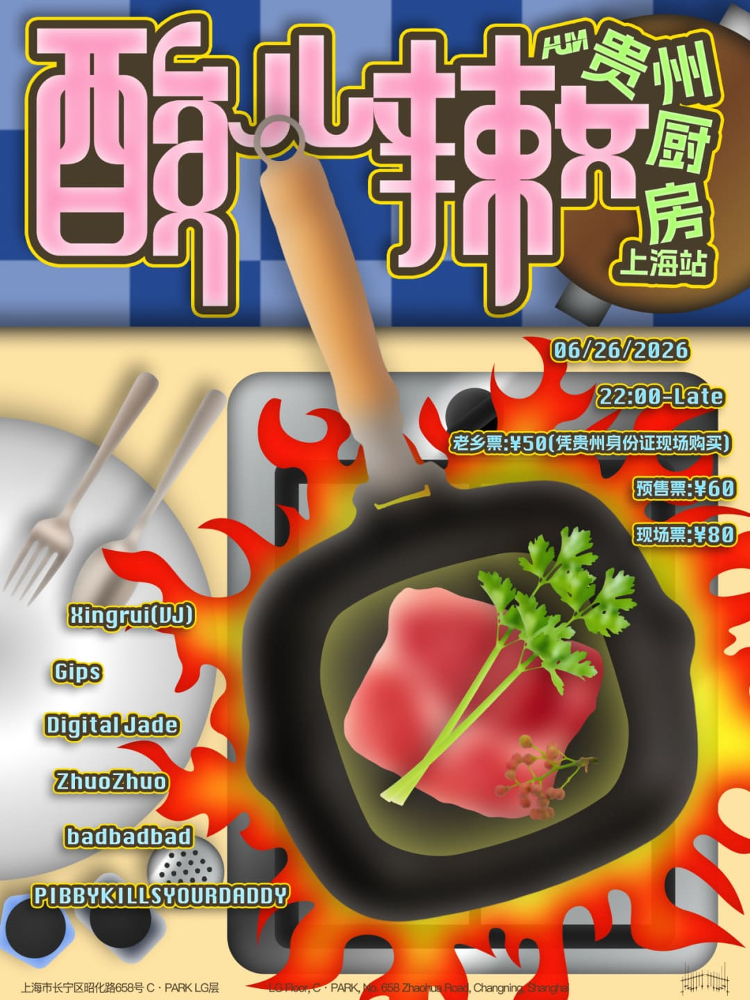

upcoming / High
MALAA @ MAX Shanghai
法国神秘匿名DJ MALAA首次登陆上海MAX俱乐部，带来标志性的G-house和bass house音乐体验。MALAA是Pardon My French核心成员，与DJ Snake、Tchami、Mercer齐名。

DateJun 20
TimeNot specified
VenueMAX Shanghai
DistrictHuangpu
SoundG-house, bass house, tech house
Price¥188起
Age / IDNot listed
Source layerticketing-screenshot
Intensityhigh
Credibilitysolid
Event Tags
Simple tags for sound, room context, ticket/source status, and details that still need a source check.
How We Recommend This
- RecommendationRecommended because the lineup (MALAA) gives the night a clear bass, breaks, 140, or UKG draw at MAX Shanghai.
- Best forBest for bass, breaks, dubstep, jungle, UKG, and high-energy club-adjacent listeners.
- Verify before goingRecheck the source link before going for ticket availability, final set times, address, age rules, and door policy.
- Source confidenceSingle public source from YuYuan WeChat mini-program; sufficient for archive visibility but still worth rechecking for live planning.
Lineup and Notes
- MALAAFrench masked DJ, Pardon My French member, G-house pioneer.
Source Trail
- YuYuan WeChat mini-program ticketing-screenshot / checked 2026-06-16 YuYuan mini-program confirms MALAA on Jun 20 at MAX Shanghai with 188 RMB starting price.
Trust Ledger
- Last checked2026-06-16
- Selection basisIncluded for source visibility, room fit, and these editorial signals: techno-adjacent, trusted source, lineup visible.
- Commercial relationshipNo paid placement recorded.
- Correction routeSend source fixes through RED 980793145 or the corrections policy.
- PolicyHow We Recommend / Corrections